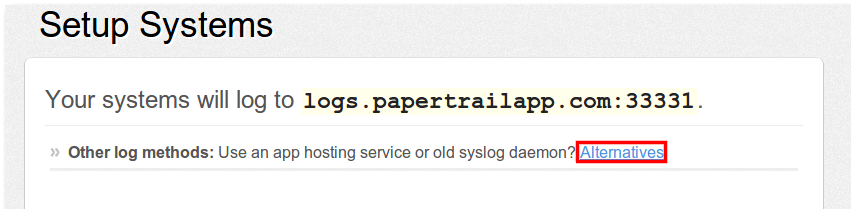
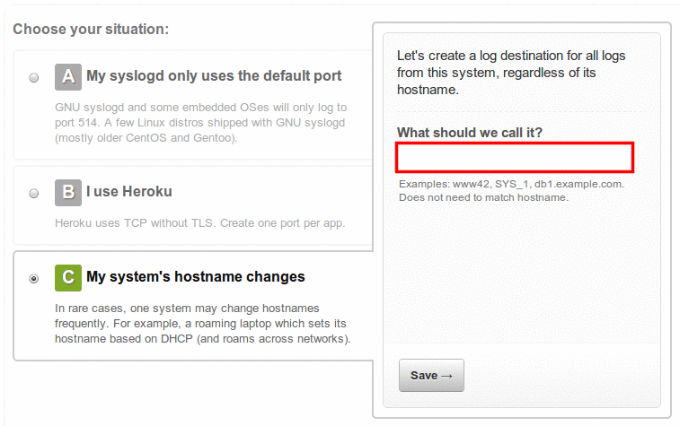
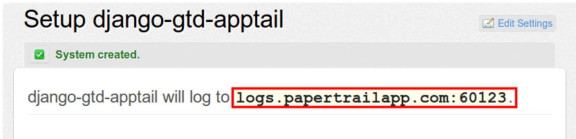
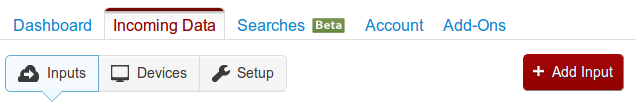
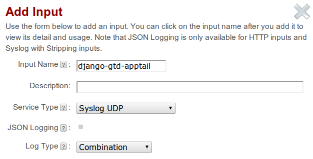
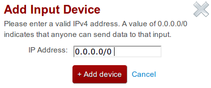
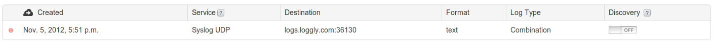
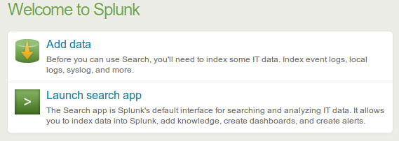
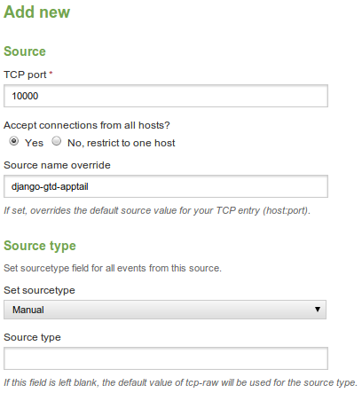

# HP Helion 1.0 Development Platform: Log Drain Examples
Papertrail - Loggly - Splunk - Hello World Custom Drain
Detailed instructions on how to use drains with third party log analysis software or services:
Note
Do not forward both application and system logs to the same destination.
Papertrail
- Create an account for Papertrail
In the Dashboard screen, click Add Systems.
In the Setup Systems screen under Other log methods, click Alternatives. 
Choose option C: My system's hostname changes and give it a suitable name. 
Note down the port number. You need this later on. 
Enable system logging (via udp) by executing the following kato command:
kato log drain add drain-name udp://logs.papertrailapp.com:port#
Note
Papertrail requires systail log lines to have <13>l at the beginning of each line. Make sure the drain you are
forwarding is formatted this way (see example in Saving Custom Log
Formats).
Loggly
- Create an account for Loggly
- Under Incoming Data tab, click Add Input. 
- In the Add Input screen:
- Choose Syslog UDP or TCP
- Choose Combination Log Type
- [Optional] For JSON Logging, Choose UDP or TCP with Stripe and enable JSON Logging. (for system logs) 
- If we want to accept logs from any Application Lifecycle Service nodes or applications modify Allowed Devices section:
- Click Add device
- Add IP Address 0.0.0.0/0 when prompted 
- Click Add device
- Turn off discovery since we allowed all devices. Also, note down the port number. 
Enable system logging by executing one of the following kato commands:
kato log drain add drain-name udp://logs.loggly.com:port# kato log drain add drain-name tcp://logs.loggly.com:port#

Loggly supports JSON format with minor configuration changes shown above. Enable system JSON logging by executing the following kato command:
kato log drain add --format json drain-name tcp://logs.loggly.com:port#
Splunk
- Set up Splunk Server.
- In the welcome screen, click Add data 
Under Choose a Data Source, click From a TCP port (or UDP)

In the Add New Source screen:
- Select a TCP/UDP port greater than 9999
- Give it a suitable Source name.
- Set sourcetype to Manual
- Leave Source Type empty 
Enable system logging by executing one of the following kato commands:
kato log drain add drain-name splunk-server-address:port# kato log drain add drain-name tcp://splunk-server-address:port#
Splunk supports JSON format without further configuration. Enable system JSON logging by executing the following kato command:
kato log drain add --format json drain-name tcp://splunk-server-address:port#
Hello World Custom Drain
The command below starts a drain target server on a node and pipes it to a local file:
nc -lk 0.0.0.0 10000 > log-output.txt
As long as that nc command runs, this will funnel logs from all drains, targeting it into the file log-output.txt
Enable system logging by executing one of the following kato commands:
kato log drain add drain-name udp://server-address:port#
kato log drain add drain-name tcp://server-address:port#